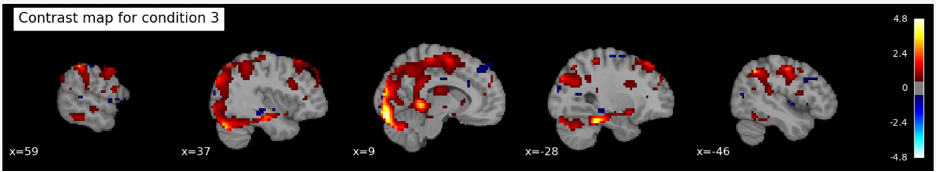
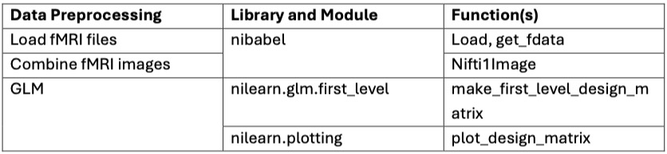
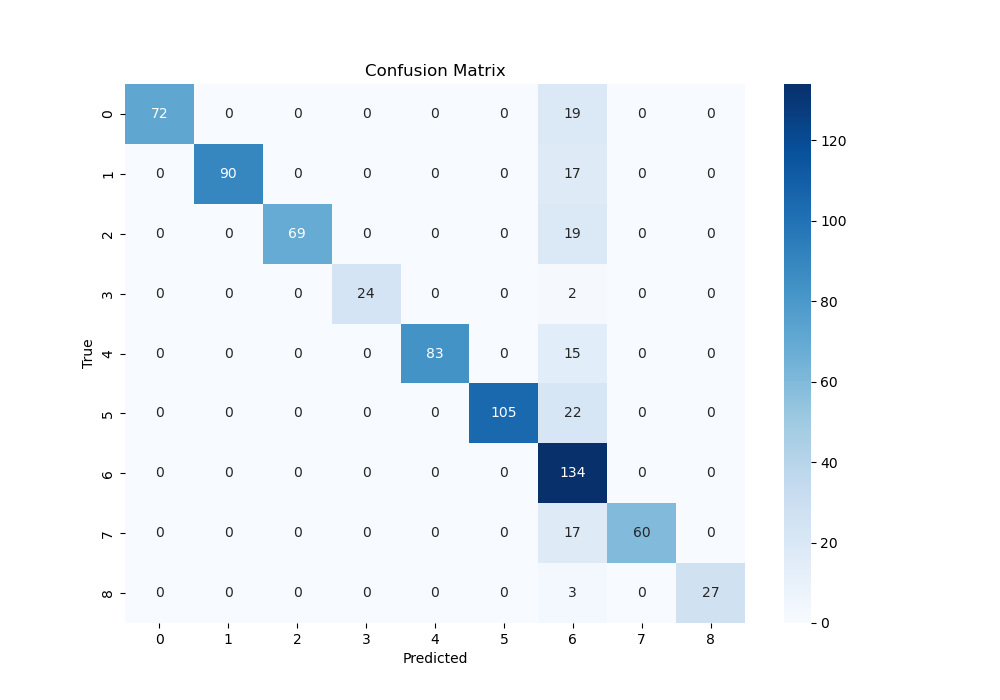
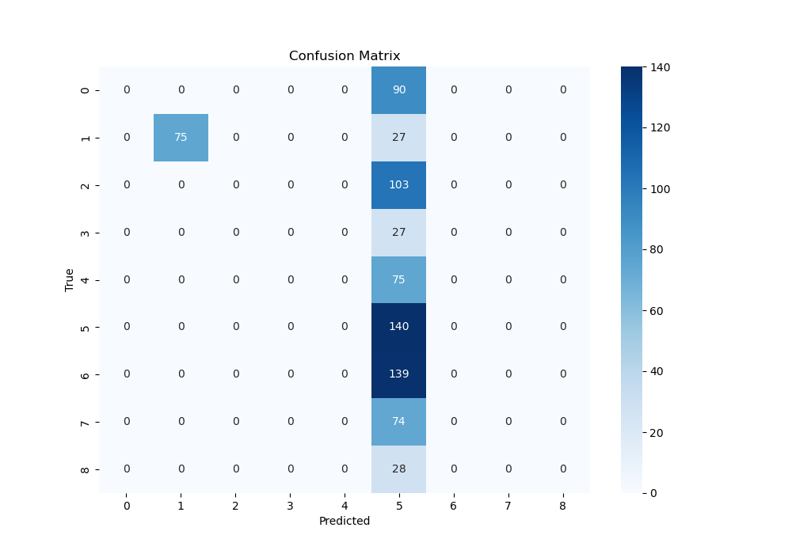
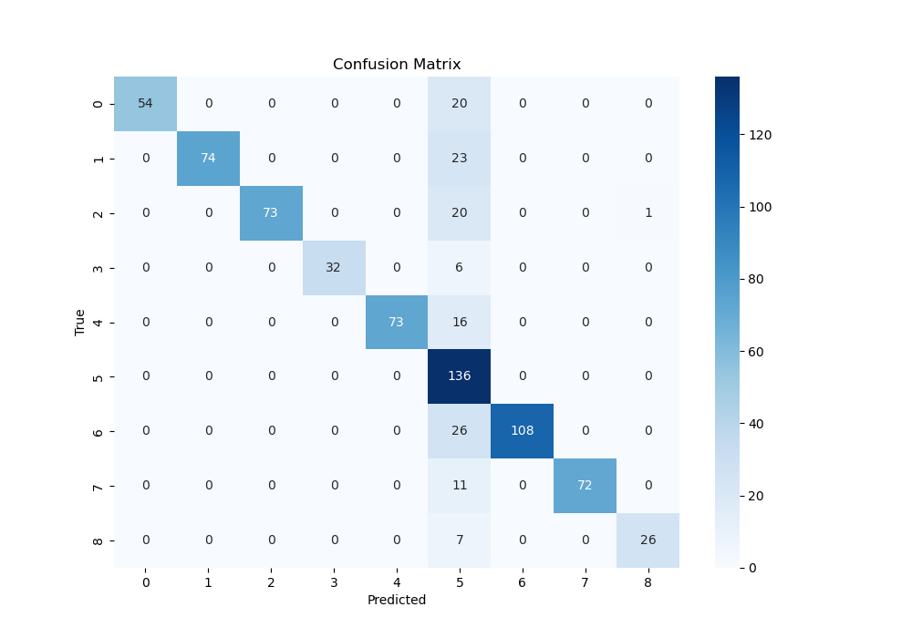
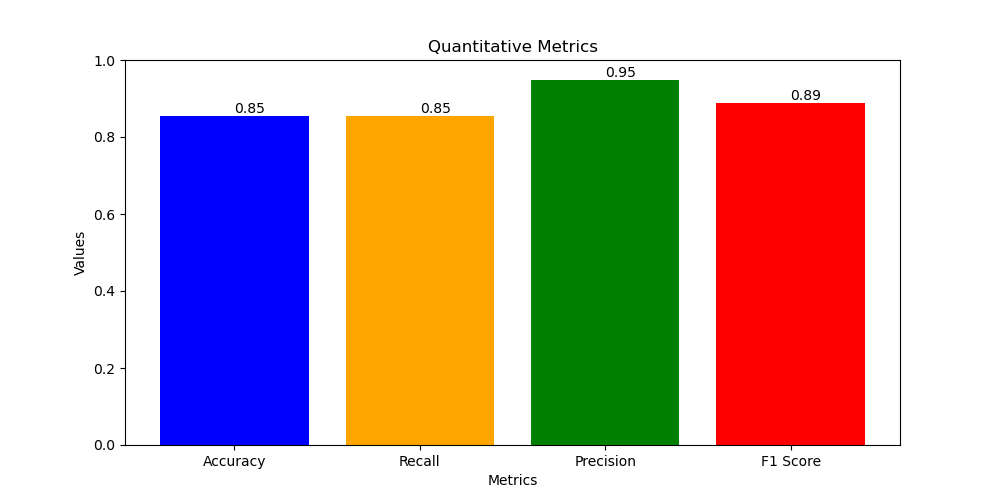
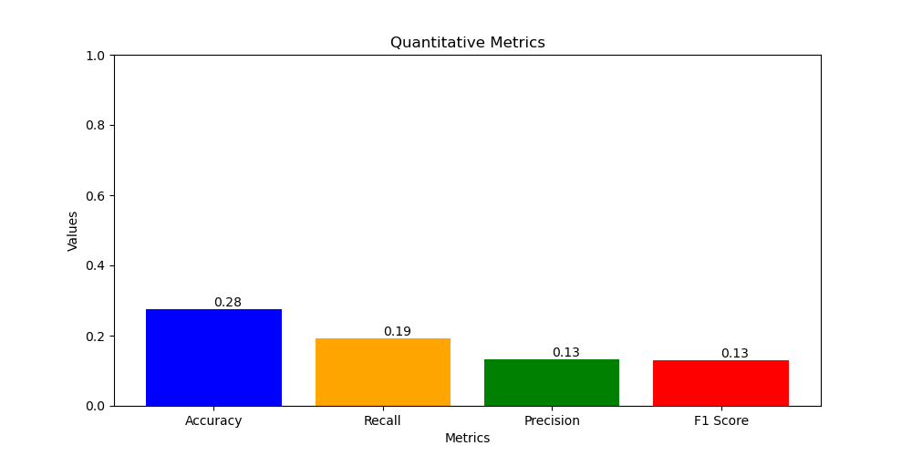
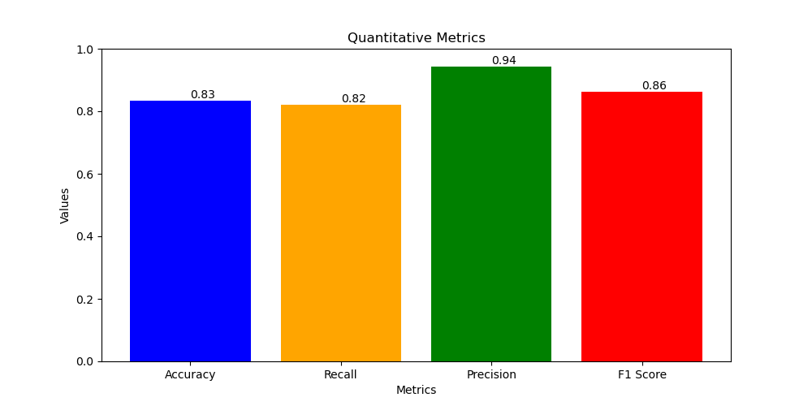
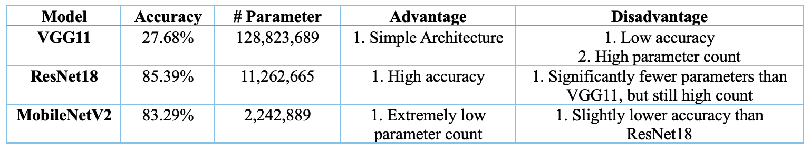

Background and Data Description, Data preprocessing
Jianwei Jia
Potential Results and Discussion, Data preprocessing
Wei-Hsing Huang
Methods, Data Description, Model Construction
Problem Definition
The following study investigates how prior knowledge and expectations influence perceptual judgments in human subjects during a discrimination task. The researchers assume prior knowledge influences perception by imposing contextual constraints on sensory inputs, which enhances the speed and accuracy of detecting stimuli (Dunovan & Wheeler, 2018). This is observed in fMRI studies on category-selective regions of the inferior temporal cortex (Tremel & Wheeler, 2015). Our aim in the current study is to use machine learning algorithms to observe if prior knowledge influences people’s decision-making in response to subsequent stimuli separately for hourse and face image.
Background and Literature Review:
The data are from a study developed by Dunovan & Wheeler (2018), which investigates the same research question but with a different approach. Previous research found indirect evidence for top-down predictions in the visual cortex, demonstrating the absence of an anticipated stimulus triggered a stronger response than seeing the anticipated stimulus itself (Kok et al., 2014). However, other studies found expected faces elicited a larger stimulus-evoked response than unexpected ones (Bell et al., 2016; Tremel et al., 2015). Thus, the current study would follow the same research questions as the previous articles and investigates if the prior expectations could enhance the response to anticipated stimuli.
Table 1
Experimental Design from Dunovan & Wheeler (2018). Each trial condition is depicted along with the breakdown of the cues in each trial.
Dataset Description
19 participants completed 600 trials (five runs of 120 trials); each run resulted in 787 medical 2D images which were converted into 3D datasets. The AFNI (Analysis of Functional Neuroimages) data is composed of two files (per trial per participant) containing the voxel numerical values, spatial characteristics of each voxel, and statistical information for each sub-brick. We will merge the files into the NIFTI file which encapsulates both metadata and the actual image data as the final dataset for machine learning in Python.
Figure 1
Experimental Design from Dunovan & Wheeler (2018). Each trial condition is depicted along with the breakdown of the cues in each trial.
Methods
Data Preprocessing:
To process fMRI data using AFNI, we first convert DICOM files from each run (run1 to run5) into AFNI’s BRIK/HEAD format using the to3d command, specifying the slice timing information with a scan time of 1500 ms, 785 images, and 29 slices. Next, the datasets are deobliqued using 3dWarp to standardize their orientation. Deobliquing is necessary to correct any oblique acquisition angles, ensuring that the data aligns with standard anatomical planes, which facilitates accurate processing and analysis. Then, a mask (fusiform parahippocampal mask) is resampled to match the images using 3dresample, ensuring that the mask and functional images are in the same space for accurate application. After that, we apply slice timing and motion correction with the 3dvolreg command, using the -tshift -Fourier option for slice timing correction and the -base option to set the reference volume (111th image in each run) for motion correction, while saving the motion parameters in text files. Slice timing correction adjusts for differences in acquisition times across slices, motion correction reduces bias due to subject movement, and outlier detection identifies time points with abnormal signal variations. The mask is applied to the motion-corrected images with 3dcalc to focus the analysis on the regions of interest, excluding irrelevant brain regions. Finally, we apply spatial smoothing to the motion-corrected data with the 3dmerge command, using the -1blur_fwhm 8 option to specify an 8mm FWHM Gaussian blur, and transfer the smoothed datasets to NIFTI format for machine learning data processing.
General Linear Model :
To process fMRI data using an event-based design matrix, we start by defining key parameters such as the repetition time (TR = 1.5 seconds), the number of slices (29), and the total number of volumes (3925) per run. Frame times for the fMRI scans are calculated based on these parameters. We then load event data from a CSV file (time_event.csv), which includes onset times, durations, and trial types of the events. This event information is crucial for accurately modeling the expected brain responses during the experiment.
Using the nilearn.glm.first_level.make_first_level_design_matrix function, we create the design matrix with a polynomial drift model of order 3 to account for low-frequency noise and signal drifts over time. Next, we initialize a first-level GLM model with specified parameters such as the repetition time, slice time reference, and Hemodynamic Response Function (HRF) model using the FirstLevelModel class. The first-level model is then fitted to the combined fMRI image data and the processed design matrix, estimating the parameters of the general linear model that best describe the relationship between the observed fMRI signal and the experimental design.To enhance the analysis, we define a contrast matrix as an identity matrix, which serves as a simple contrast for each condition. Contrasts are used to compare different conditions or to isolate the effect of a specific condition. For each condition, we compute the contrast using the compute_contrast method of the fitted model, producing contrast maps. These maps show regions of the brain where there are statistically significant differences in activation related to the conditions being compared.

Figure 2: Contrast map showing the activated and deactivated regions of the brain in the condition 7.

Table 2: fMRI Data Preprocessing Steps with Python Libraries and Functions.
Unsupervised and Supervised Learning Methods proposed
Unsupervised Learning Methods for Data Processing:
K-Means, GMM, DBSCAN etc.
Supervised learning method for predicting the results:
CNN-ResNet18: ResNet18 is highly effective for analyzing fMRI data due to its deep architecture and residual connections that facilitate learning complex patterns in brain activity.
CNN-VGG11: VGG11 is useful for fMRI data analysis as its simple yet deep architecture captures detailed spatial features in brain imaging with consistent accuracy.
CNN-MobileNetV2: MobileNetV2 excels in fMRI applications by providing efficient and accurate brain activity analysis on resource-constrained devices due to its lightweight and optimized design.
Data Processing Method Implemented
1. Using to3d, 3dvolreg, 3dToutcount and 3dmerge tools in FMRI to do the 1st processing step:
a. To process FMRI data using AFNI, we first converted DICOM files from each run (run1 to run5) into AFNI’s BRIK/HEAD format using the to3d command,
specifying the slice timing information with the time of each scan = 1500 ms, number of images = 785, slice numbers = 29.
Next, we applied slice timing and motion correction with the 3dvolreg command,
using the -tshift -Fourier option for slice timing correction and the -base option to set the reference volume (111th image in each run) for motion correction,
while saving the motion parameters in text files.
The 3dToutcount command then computed outlier counts for each volume in the motion-corrected data,
and we used -automask to create a brain mask and -fraction to output the fraction of voxels in the mask that are outliers.
Finally, we applied spatial smoothing to the motion-corrected data with the 3dmerge command,
used the -1blur_fwhm 4 option to specify a 4mm FWHM Gaussian blur, and transfered the smoothed datasets to NIFTI file for ML data processing.
b. Slice Timing and Motion Correction: Next, we applied slice timing and motion correction with the 3dvolreg command, using the -tshift -Fourier option for slice timing correction and the -base option to set the reference volume (111th image in each run) for motion correction, while saving the motion parameters in text files.
c. Musk implemenation for brain area selection: A mask (fusiform parahippocampal mask) is resampled to match the images using 3dresample, ensuring that the mask and functional images are in the same space for accurate application.
Part of the 3D images data visualization after processing:
2. Using K-means to do the 2nd processing step (in Midterm Report):
K-means method:
In total we had 64x64x29x785 data points to analyze from the images, (64x64 is for one grayscale picture, for every data point, we have 29 different these images to construct a 3D brain image, and there are total 785 data points). We used K-means to remove the background noise from these 3D brain images to get a more accurate brain region recognition for model training. Our logic was that because k-means can be used to cluster the different parts of brain, if we give it a number of clusters it can be used to remove some noise points.
First, 50 clusters were initiated and we used the K-means algorithm to recognize important structures. Second, we chose the 40% nearest points in a fixed distance region with the K clusters central points as our clusters and classified the
other points which haven't been allocated into these clusters as noise points (similar to DBSCAN). This way, we obtained a cleaner dataset and can improve our predicted results in
when training the model.
Code file: CS7641_fMRI_DL/data_process_code/project_Hugo_ver2.py (Final including plot)
Results and Discussion
For the validation data prediction:
1. Draw the Confusion Matrix for the three Predict Models:
Confusion Matrix For CNN-ResNet18:

Confusion Matrix For CNN-VGG11:

Confusion Matrix For CNN-MobileNetV2:

The confusion Matrix is used to see the relationship between the predict and true result in terms of 9 different picture conditions according to the brain 3D images, which means if we can predict the pictures successfully according to the brain activation. From above, we can know the ResNet18 and MobileNetV2 has a better performance.
2. Draw the Quantitative Metrics for the three Predict Models:
Quantitative Metrics For CNN-ResNet18:

Accuracy = 0.85
Recall = 0.85
Precision = 0.95
F1 score = 0.89
Quantitative Metrics For CNN-VGG11:

Accuracy = 0.28
Recall = 0.19
Precision = 0.13
F1 score = 0.13
Quantitative Metrics For CNN-MobileNetV2:

Accuracy = 0.83
Recall = 0.82
Precision = 0.94
F1 score = 0.86
Project Goals
Confirm what areas of the ITC are activated during the study.
See if we can predict what image was being viewed from the changes in brain activation
Investigate the neural signals corresponding to the subjects' expectations during the pre- and post-sensory stages of decision-making
Expected Results and Current Results
1.Compared with the three different models:
a. Advantages and Disadvantages for CNN-ResNet18:
Advantages: The shortcut structure makes it easier to train deep networks. It has far fewer parameters than VGG11, and when paired with custom hardware accelerators, it has more potential for real-time edge applications than VGG11.
Disadvantages: The shortcut architecture requires specialized hardware architecture to solve memory bound problems. Fortunately, due to the recent popularity of deep learning, many companies (e.g., Google, Meta, Nvidia, AMD…) and even startups have introduced numerous SOCs and ASICs suitable for shortcut operations, making the ResNet architecture very promising for edge applications. However, although the number of parameters has significantly decreased compared to VGG11, it's still too resource-intensive for extremely low-power and low-cost edge devices. Therefore, I also implement MobileNetV2 for this task.
b. Advantages and Disadvantages for CNN-VGG11:
Advantages: No shortcuts required. Since shortcuts need to store previous feature maps, VGG net may have better hardware efficiency on simpler tasks for some hardware devices that are not optimized for hardware architecture, particularly those suffering from memory bottlenecks.
Disadvantages: Significantly more parameters than ResNet18, and due to the lack of shortcut structure, it leads to the vanishing gradient problem, resulting in much lower inference accuracy compared to ResNet18.
c. Advantages and Disadvantages for CNN-MobileNetV2:
Advantages: MobileNetV2 is a lightweight neural network. At a high level, it combines pointwise convolution and depthwise convolution to significantly reduce the number of parameters while only slightly reducing accuracy.
Disadvantages: Although the number of parameters is greatly reduced, the accuracy is lower compared to ResNet18. Therefore, in fields that are very sensitive to accuracy (e.g., medical), MobileNetV2 may not be the best choice.
2. Compared the confusion matrix and quantitative metrics for the three model's prediction performance:
Three Models Comparation Table:

a. ResNet18: achieves the best balance between accuracy (85.39%) and parameter count, making it the top-performing model among the three.
b. MobileNetV2: offers a slightly lower accuracy (83.29%) compared to ResNet18 but excels in having the lowest parameter count, making it suitable for resource-constrained environments.
c. VGG11: has the lowest accuracy (just 27.68%) and the highest number of parameters, which might not be ideal for applications with limited resources although it has the simplest structure.
3. Overall Conclusion:
a. We have successfully using mask area to confirm what areas of the ITC are activated during the study in data processing stage.
b. We have successfully using ResNet18 and MobileNetV2 to predict what image was being viewed from the brain activation fMRI images (>80% Accuracy, improving a lot compared with the midterm 20%).
c. We also try to use time serial model to investigate the neural signals corresponding to the subjects' expectations during the pre- and post-sensory stages of decision-making, but because of the data time content is not enough, the outcome is not good, need to do further investigation.
Further to improve:
1. Data process: Use advance data process techniques to increase sample diversity, helping the model learn more robust features.
2. Model Adjustment: Try different model architectures or hyperparameter optimization to enhance the model's generalization ability.
3. Feature Engineering: Extract more effective features or use new pre-trained models for feature extraction.
Timeline
1. Prepartion and Survey (Project Proposal)
May 24 - June 14, 2024
Initial meeting to discuss FMRI project data access, goals, timeline, and responsibilities.
2. Data Collection and Initial Data Preprocess
June 15, 2024 - June 24, 2024
Collecting and organizing the FMRI data from various sources, using FMRI tools, K-means method to do the data process and clean.
3. Initial Model Construction and Training (Midpoint Report)
June 25, 2024 - July 03, 2024
Using CNN (ResNet) to do the model training and validation.
4. Advanced Data Process, Model Construction and Training (Using Mask to do brain area selection and construct the CNN-VGG11 and MobileNetV2).
July 04, 2024 - July 14, 2024
Cleaning and preprocessing the data for analysis.
5. Model Improvement and Evaluation (Training and using three models to do the prediction.) (Final Report)
July 15, 2024 - July 23, 2024
Training machine learning models on the preprocessed data.
Bell, A. H., Summerfield, C., Morin, E. L., Malecek, N. J. & Ungerleider, L. G. Encoding of Stimulus Probability in Macaque Inferior Temporal Cortex. Curr. Biol. 1–11, https://doi.org/10.1016/j.cub.2016.07.007 (2016).
Dunovan, K., & Wheeler, M. E. (2018). Computational and neural signatures of pre and post-sensory expectation bias in inferior temporal cortex. Scientific Reports, 8(1), 13256. https://doi.org/10.1038/s41598-018-31678-x
Kok, P., Failing, M. F. & de Lange, F. P. Prior Expectations Evoke Stimulus Templates in the Primary VisualCortex. J. Cogn. Neurosci. 26, 194–198 (2014).
Tremel, J. J., & Wheeler, M. E. (2015). Content-specific evidence accumulation in inferior temporal cortex during perceptual decision-making. NeuroImage, 109, 35–49. https://doi.org/10.1016/j.neuroimage.2014.12.072